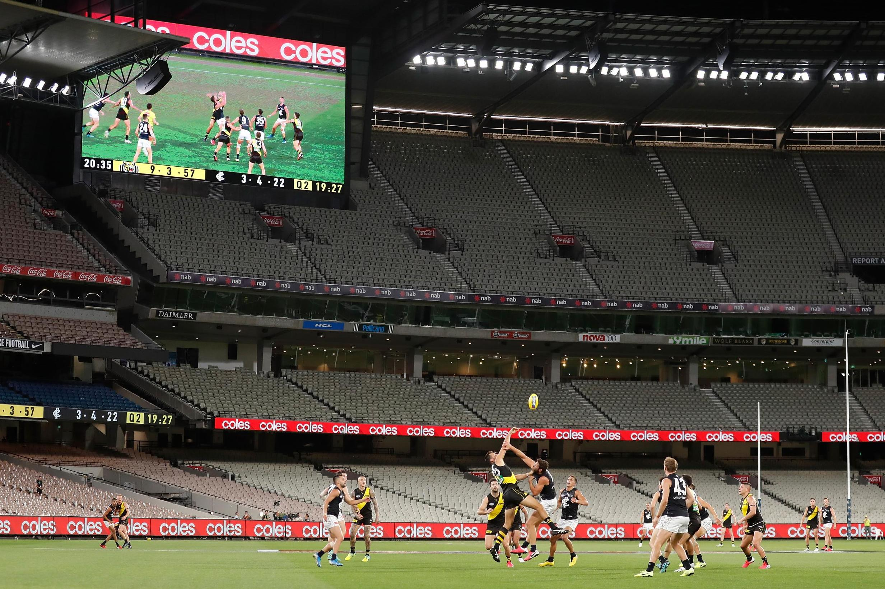

I congratulate you on the great success of your performance …Oscar Wilde's improptu speech to the audience at the opening of Lady Windemere's Fan [1. probably embellished apocryphally.]

The current emptying of audiences offers a teachable moment about the construction of markets and the enclosure of value, particularly in the world of non-rivalrous cultural goods. People arenoticing that top-line football is not the same without the audience and that comedy is certainly, not the same without the audience. We're apt to miss how important audiences are to the experience because the focus is on the players.Football came into existence as a social game – it began as what I call an emergent public good, a public good that we build ourselves out of the ordinary traffic of life. Over time, as competition built up, crowds gathered. At that point, the game could also be thought of as produced by producers (players and clubs) for consumers (ticket payers and later media audiences of various kinds). At that point, football became a theatre of inter-suburb rivalry. Each suburb would field a football team with great pride and the suburbs represented by their teams would duke it out on the field. Symbolic warfare in which no-one got (too seriously) hurt. People wanted to play for pride and glory, but many of them were also poor and the clubs had enough to pay them.
This is all different now as commerce has turned football into a commodity to be sold – mostly for TV rights but also for gate takings roughly as Marx would have predicted. All that was solid within the institutions of football then melted into air. Things of great sentimental value to their suburbs and their local followers – like the football clubs of Fitzroy and South Melbourne in the (then) VFL were simply removed from the competition so their 'brand' could be moved elsewhere to optimise the game and its revenue on a national scale.
I certainly wouldn’t argue that it's been all bad. The old clubs were extremely paternalistic. This had its good points (keeping player payments in check and ticket prices low) but also many bad ones. I remember seeing Carlton's second ruckman Percy Jones having his sideburns cut off on This Day Tonight – the then equivalent of the 7.30 report making a show of club discipline. The amenities were shocking by today's standards.
There was something to be said for the conservatism of the old days, for all games being played at the same time and everyone getting home and watching footy replay on their black and white screens. But there's obviously something to be said for the staggering of games and the consolidation and vast improvement of grounds. Anyway, today the game has been effectively colonised by money. That's meant that, where you could argue they were underpaid (if they were prepared to play I'm not sure that they were), the players have become overpaid.
But who should be thought of as the 'owner' of the game? I'd say we are. The public. Not the corporations that run the clubs. Not the players. The public. We've never developed institutions to represent the interest of the public in the running of the game. And so those who do own the game legally have us where they want us – in the optimal position from their perspective – as passive customers to be 'harvested' as they say in marketing.
That's optimal for anyone seeking to colonise and exploit the game to their own ends because, as customers, the public have no collective say over things. And that means that their money gravitates towards salaries for those running the game and for the players who can command the highest fees. In fact, rather unusually, we've developed the hybrid system of salary caps which does keep players salaries below the stratospheric level achieved elsewhere. But, like the 'studio system' in Hollywood, that's ultimately for the convenience and profit of those controlling the game, not for the public's benefit.
So I'd like to see the public as the custodian of the game. How could one institutionalise it? A citizens' assembly ought to do just fine.[1. For the sake of illustration, I'd give members of the assembly an 18 month term and roll over a third of the members every 6 months.] It would be in charge of all aspects of the game. It could regulate player fees, transfers, the rules, the whole deal. I expect lots of people's immediate reaction to this would be horror.
Wouldn't they reduce players fees to zero? Perhaps. They could. It wouldn't necessarily be a bad idea if they did – we'd see how much it affected the supply and quality of players and could make adjustments accordingly. But I doubt they would. Wouldn’t they regulate ticket prices to zero? No, because they need to pay for amenities etc. I think player fees would come down – perhaps through substantially lower salary caps and ticket prices would be much reduced – particularly where there was excess capacity. I also expect there'd be less in the way of corporate tickets, leaving more room in big games for people who actually want to see the game, rather than sip the champers.
And there'd be big surpluses from TV rights. That might be used initially to reduce ticket prices to zero where there weren't capacity constraints and perhaps to build some more capacity. But if the citizens' assembly could really think about the public interest they might pay a dividend to the public or otherwise commit the money to philanthropic causes as we do with public lotteries today.